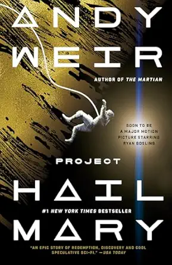

Project Hail Mary by Andy Weir is a quintessential sci-fi delight that delivers on all fronts: humor, suspense, and genuine scientific ingenuity. From the author who brought us The Martian, Weir once again crafts a story around a witty, resourceful protagonist facing seemingly insurmountable odds in space.

Ryland Grace, a junior high science teacher, wakes up on a spaceship with no memory of who he is or how he got there, only to discover he’s humanity’s last hope.
The book is a masterclass in making complex scientific concepts accessible and entertaining. Weir’s ability to blend hard science with a compelling narrative creates a deeply immersive reading experience. Grace’s internal monologue is a highlight, filled with sarcastic observations and clever problem-solving that will have readers rooting for him every step of the way.
One of the most charming aspects of Project Hail Mary is the unexpected friendship Grace forms with an alien entity. Their relationship brings some of the most heartwarming and laugh-out-loud moments in the book, showcasing Weir’s talent for character development far beyond just the human element.
With a movie adaptation in the works, starring Ryan Gosling as Ryland Grace, anticipation is high. Gosling’s knack for playing charmingly awkward yet capable characters seems like a perfect fit. With directors Phil Lord and Chris Miller involved (known for Spider-Man: Into the Spider-Verse and The Lego Movie), the film promises a blend of scientific adventure and heartfelt humor. If the movie captures the book’s tension, wit, and sense of wonder, it's likely to become a major hit.
For fans of The Martian, or anyone looking for a smart, funny, and genuinely exciting science fiction novel, Project Hail Mary is an absolute must-read. It’s a journey filled with discovery, friendship, and the enduring power of human — and alien — ingenuity.